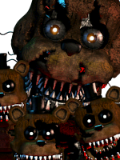
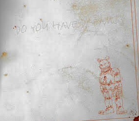
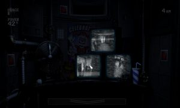

If you see any issues, please do make us aware via our Contact Form.
Thank you for browsing FNaFLore.com, we hope you enjoy the improvements that are coming to the site!
even played the game?

Why The Nightmares Are Not Real
Ever since the release of FNaF 4, the identity of the Nightmares has been hotly contested. Some of the most popular ideas include them being a dream, real robots altered by sound disks, or even real giant murder tooth monsters. Though with the recent release of Ultimate Custom Night, I’m 100% positive that the once unclear origin of these monstrous animatronics is now known. And it was honestly super obvious this entire time.
The Nightmares are literally just Nightmares
The Nightmares were, initially, always assumed to be just that. Nightmares. But over time, people decided to shift their theories. “What if they’re not that simple? Surely there has to be more!”. And when Sister Location eventually released, these people actually seemingly got their wish. Sister Location provided clues and nods to FNaF 4 and the Nightmares. Specifically, the Breaker Room map and the Private Room monitors. The Break Room map showed what appeared to be “test chambers” shaped like the FNaF 4 house labelled “Observation”. This map also included dots which many assumed to be the positioning of the Nightmare characters. This, coupled with the Private Room showing the bedroom from FNaF 4, made people convinced. The Nightmares were real! And they’re an experiment by William Afton! Hurray, FNaF 4 is finally solved…right?
And then Ultimate Custom Night happened and everything got REALLY simple.
After the release of UCN, multiple major lore hints were provided through character death lines.One of these hints revolves around the Nightmares. Nightmare Freddy and Nightmare Fredbear specifically make reference to who they are.

“I am given flesh to be your tormentor.”
This line implies that Nightmare Freddy was at one point not made of “flesh” (Metal? Cloth? He clearly isn’t flesh, right? Just me here?). This could, and most definitely does, mean that wasn’t a physical entity until this point. This is further backed up by a quote from Nightmare Fredbear.
“This time, there is more than an illusion to fear.”
This line outright states that previously, Nightmare Fredbear was simply just an illusion. Coupled with Nightmare Freddy’s lines, this shows that the Nightmares aren’t real.
“But Connie! Nightmare Fredbear also says ‘I assure you, I am very real.’ That should mean the Nightmares are real.”
It is true that Nightmare Fredbear DOES state that he is real. But…That ignores the context of that line. He is real. Real in that reality. Similar to the circumstances regarding Nightmare Freddy, Nightmare Fredbear was given a real form for this event.
“But what about Nightmare Freddy’s line ‘I am remade, but not by you. By the one you should not have killed.’ Surely that proves that the player made the original Nightmare Freddy and thusly the rest of the Nightmares, right?”
It’s true that Nightmare Freddy says that as well. But, like N. Fredbear’s line, it ignores context to view it that way. N. Freddy is literally stating a fact. Nightmare Freddy was remade to be real, and it wasn’t by the player. There’s no hidden meaning there when you view it with the proper context. So, given ALL of these quotes, it’s very safe to assume that the Nightmares are in fact real.
“But Connie…Doesn’t this all depend on who you play as in UCN?”
That’s an extremely valid point that, initially, I’d overlooked entirely. Originally I’d never really considered how each version of the UCN Player Theory affects how each player knows about each character, specifically the Nightmares. So, for the sake of covering all bases, I’m going to cover both the scenario of William being the player and Michael being the player.
In the event we play as William:
This theory relies on the idea that William doesn’t necessarily know about the Nightmares but whatever entity controlling this hell does. We know that not ALL of the characters created are ones that anyone would know about such as Dee Dee, OMC, etc.. Therefore, it’s not too wild to assume that the entity created characters based on what it knows rather than what William knows. It explains why William can be tormented by characters he doesn’t necessarily know while also ones he does know about. However this relies on the concept of the entity knowing about the Nightmares, which…Carries no real backing evidence. Though considering they were able to create entirely non-canon characters, it’s not too far-fetched of a concept.
In the event we play as Michael:
This theory relies on the idea that the entity holding Michael is basing his torment on characters he’s seen. This ALSO relies on the idea that Michael has to have been at both the FNaF 2 location to know about the Toys and the Withereds as well as the FNaF 3 location in order to know about the Phantoms and the original Springtrap. It would explain why the entity chose the Nightmares and such as he had be the one originally afflicted by them and would also coincide with one of Fredbear’s lines (Though this is more of a coincidence more than anything as it still works with the idea of William being the player). This theory also has to rely on the idea of the entity creating non-canon characters and such due to a canon character not knowing about a non-canon one and such.
“You can’t base all of your evidence on UCN. Plus you didn’t even touch on Sister Location like you presented at the start.”
That’s a fair point. I can’t just rely on Ultimate Custom Night…Which is why I’m not. Thanks to Scott’s strange obsession with obscure ways of delivering lore, the Security Logbook actually provides an extremely solid hand to the notion of the Nightmares being Nightmares.

On Page 41 of the Logbook, in response to the question “Do you have dreams?” Mike draws an extremely accurate Nightmare Fredbear. Now, given the fact that this is in response to the question of him having dreams, there’s legitimately *no* other way to interpret this. Mike dreamt of the Nightmare animatronics. The evidence from Sister Location is rather messy. The Breaker Room map seems like solid irrefutable proof. After all, the dots seemingly represent the position of other robots so SURELY it must mean that the dots in the 4 house are the Nightmares…except that makes absolutely ZERO sense. The map in the house shows the position of 4 “animatronics” however…Nightmare Foxy never starts in the closet. Yet the dot is shown in the closet. Two dots are shown at the end of the hall and are presumably Nightmare Bonnie and Chica but there’s also a dot in the kitchen, which means that she would have to be in the kitchen. Which means whoever is in the right hall ISN’T Chica. And it can’t be Nightmare Fredbear or Nightmare because they’re never active while the others are present. Plus Nightmare Freddy isn’t marked in the bedroom. Thusly…The map just doesn’t work. So what DOES it mean?
The evidence from Sister Location is rather messy. The Breaker Room map seems like solid irrefutable proof. After all, the dots seemingly represent the position of other robots so SURELY it must mean that the dots in the 4 house are the Nightmares…except that makes absolutely ZERO sense. The map in the house shows the position of 4 “animatronics” however…Nightmare Foxy never starts in the closet. Yet the dot is shown in the closet. Two dots are shown at the end of the hall and are presumably Nightmare Bonnie and Chica but there’s also a dot in the kitchen, which means that she would have to be in the kitchen. Which means whoever is in the right hall ISN’T Chica. And it can’t be Nightmare Fredbear or Nightmare because they’re never active while the others are present. Plus Nightmare Freddy isn’t marked in the bedroom. Thusly…The map just doesn’t work. So what DOES it mean?

Who knows!
I’m dead serious here. It doesn’t work as markers for the Nightmares because it doesn’t make sense when relating to how they work. But it can’t be cameras because similar dots on the map denote animatronics. Overall, unless Scott ever clarifies it, it’s entirely meaningless. It’s too flawed a piece of evidence for anyone to use properly. As for the Private Room cameras…I’m not entirely sure how it prove the Nightmares are real? It’s not out of William’s character to want to monitor his home. Especially given his children are prone to running away as shown in FFPS in the Midnight Motorist minigame. Him rigging up cameras to monitor his child while he’s at work makes sense.

With all of those counterpoints touched on, and all of the evidence provided otherwise, I feel it is safe to say that the Nightmares are in fact simply Nightmares. From the UCN quotes to Mike’s own admission of seeing the Nightmares, it’s clear that they’re all simply a product of Mike’s own fear and trauma.